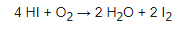

Kyselina jodovodíková je vodný roztok jodovodíka. Označuje sa chemickým vzorcom HI. Je to bezfarebná silná bezkyslíkatá kyselina. Ide o jednu z najsilnejších kyselín, má veľmi silné korozívne vlastnosti.
Kyselina jodovodíková reaguje so vzdušným kyslíkom za vzniku jódu:
Kyselina jodovodíková je v USA zaradená na zoznam látok, ktoré sa používajú ako nelegálne drogy alebo pri výrobe nelegálnych drog, pretože sa používa ako redukčné činidlo pri výrobe metamfetamínu z efedrínu alebo pseudoefedrínu (ktoré sa dajú izolovať zo sprejov na uvoľnenie dýchacích ciest).